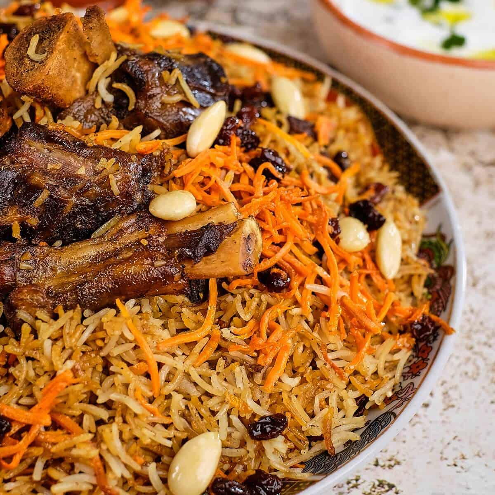

Kabuli Pulao

Ingredients:
- 2 cups basmati rice
- 1 lb lamb or beef
- 1 onion, sliced
- 1/2 cup raisins
- 1/2 cup shredded carrots
- Spices (cinnamon, cardamom, cumin, salt)
Instructions:
- Boil rice until half cooked. Drain and set aside.
- Fry onion and meat until browned.
- Add water and cook meat until tender.
- Fry carrots and raisins separately with a bit of sugar.
- Layer meat and rice, top with carrot and raisin mix.
- Steam everything together for 20 minutes.
Submitted by: Amina from Kabul